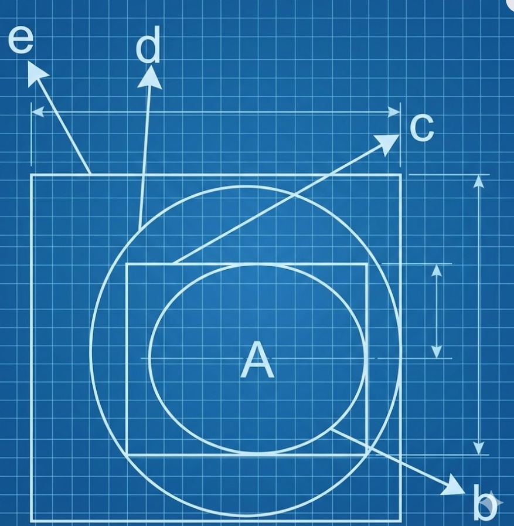

Chapter 1: Ideas In Kabbalah — Section XIX
Recursion of the Void
"There are ten empty spaces, and each is divisible into ten... ad infinitum." — The Fractal Void.
Mode: RECURSIVE ZOOM. Infinite descent into the void.
Nested Dimensions
There are ten empty spaces, each divisible into ten ad infinitum. Each exists on a different plane. For instance, our 3D sphere is surrounded by a 4D sphere (Royalty of the Infinite). The diagram below illustrates this nesting.

The time-axis is negative, implying that to get the regular order, one must turn the diagram upside down. This relates to the Chassidic teaching equating Tohu (Chaos) with the angles of the Divine Chariot.